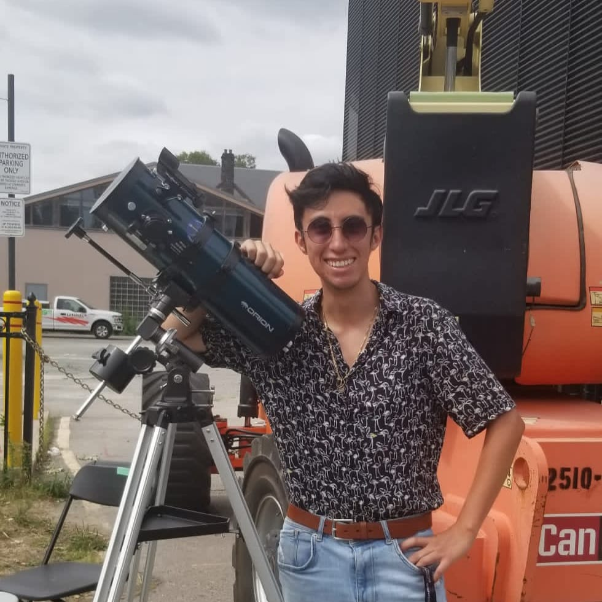

About Me
Education: I am a 4th year undergraduate student at the University of Toronto doing the specialist program in Physics and Astronomy. I am highly enthusiastic on computational physics and observational astronomy, hence my executive role in the University of Toronto Amateur Astronomers Society and my current research on optical transients with Dr. Dae-Sik Moon
Research Interests: My research has been motivated by the observations conducted by Korean Microlensing Telescope Network; with a 24hr continuous southern-sky survey we are able to trigger observations instants after first light. My current research is based on a young core-collapse supernova located almost at 450Mpc from Earth
Publications: Include ADS link!